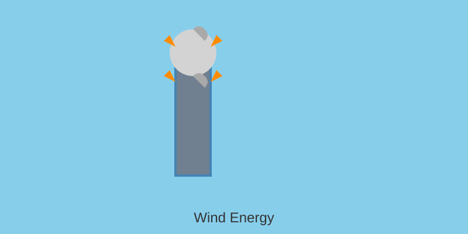

World-class wind resources: Gippsland 15 GW, Hunter 3 GW, Macquarie 2 GW. Offshore Wind Industry Act 2021. 10,000+ jobs projected by 2040.
Australia's coastline offers exceptional offshore wind potential. The Offshore Wind Industry Act 2021 established the framework for development in Victorian and NSW waters.
| Project | Capacity | Location | Status |
|---|---|---|---|
| Gippsland Dawn | 2,200 MW | VIC | Development |
| Star of the South | 2,200 MW | VIC | Planning |
| Hunter Water | 1,500 MW | NSW | Exploration |
| Macquarie | 2,000 MW | NSW | Feasibility |
| Sotoon | 3,000 MW | NSW | Early Stage |
Current: 15 MW turbines (Vestas V236, SG 14-222 DD). Foundation: monopiles, jackets, floating.
Future: 20+ MW next-gen. Floating offshore wind (Hywind, Bluefloat) unlocking deepwater sites.
Capacity Factor: 40-55% (offshore superior to onshore 30-45%).
Potential: 15 GW by 2040
Jobs: 10,000+
Investment: $80B+
Area: 7,000 km²
LCOE: AU$60-80/MWh
Macquarie Harbour (Tasmania) hosting Zuriki offshore wind. Golden Bay potential for future development. Community consultation underway for noise, visual, and environmental impact assessments.
Offshore wind connects via HVDC submarine cables. Port infrastructure upgrade critical (Hastings, Newcastle). Supply chain localization to reduce costs 20-30%.
Victoria leads with 9 GW pipeline. NSW Offshore Wind Panel established. Federal Future Marine Technology strategy. 82% renewables NEM target enabled by offshore wind firming capacity.